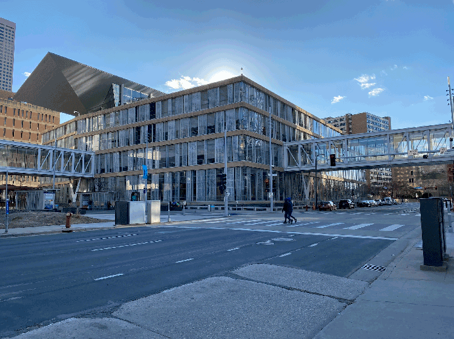
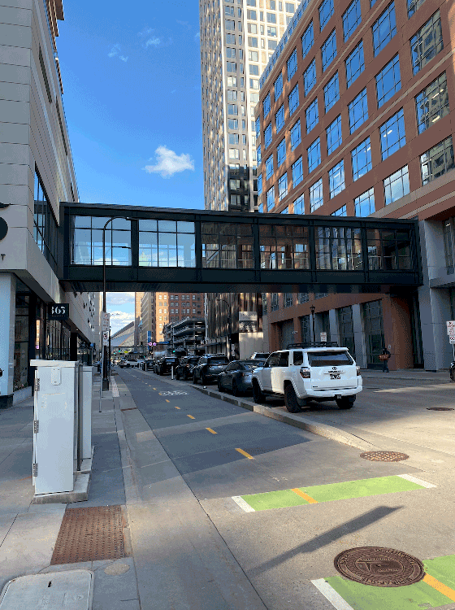

Figure 1. The Minneapolis Skyway at the Central Library in Downtown.
I've lived in Minnesota my whole life, and growing up, Camp Snoopy (RIP–now "Nickelodeon Universe") was my favorite amusement park. As teens, my friends and I could spend days at the Mall of America and never go to the same store. Or only go to each of the Caribou Coffees!
The Mall of America's layout, directories, and wayfinding all enabled safe exploration and engagement (bonus, I never looked young enough to be asked by security if I was younger than 16 to be sent home)!
In the late 2000's and into the 2010's the Mall got a "face-lift" and updated directory kiosks that let mall-goers browse by category or Point-of-Interest, and see a visual of the route they need to take (including changing floors!) to get to their destination.

Figure 2. The newest Skyway footbridges, connnecting the Central Library to other Downtown buildings.
The Minneapolis Skyway is a series of enclosed footbridges that connect buildings in Downtown Minneapolis to one another. With these enclosed bridges throuhgout Downtown Minneapolis, pedestrians are able to be more mobile during harsh weather (blizzards or heat!) and in the decades since they were first built, a sort of Skyway community was built, with regular foot traffic from workers and residents alike to support local business.CITATION

Figure 3. The Skyway along Nicollet Ave in Downtown Minneapolis.
No matter my intentions, after I moved in, I found myself balking at using the Skyway (even though I intentially selected a pharmacy in the Skyway so I could walk to it whenever I had to pick up a prescription).
You see, even though the Skyway connects buildings, it's not straight-forward like the street grids those cities are built on. In fact, most of the footbridges connect buildings on the second floor, but there are some street-level and tunnel-level access points! (“Minneapolis Skyway System”, Wikipedia, accessed January 28, 2026, https://en.wikipedia.org/wiki/Minneapolis_Skyway_System)
The hours are also inconsistent, especially post-COVID, when most Downtown offices adjusted to remote work (and even in the years since when offices have re-instated hybrid work). Ordinances state that “skyways shall remain open to the public Monday through Friday, from 6:30 a.m. to 10:00 p.m., Saturday, from 9:30 a.m. to 8:00 p.m., and Sunday, from 12:00 p.m. to 6:00 p.m.," yet "[d]espite this requirement, Downtown residents, workers, and visitors regularly encounter access issues and inconsistencies across the system during times of day when they should be open." ("Minneapolis skyway system: governance and access (RCA-2025-00678)", Minneapolis Legislative Information Management System, City of Minneapolis, June 10, 2025 meeting notes, https://lims.minneapolismn.gov/RCA/24976)
After months of avoidance, I finally found a map I felt comfortable using to get to the Walgreen’s Pharmacy on Nicollet. But it was just a static image on a webpage, so I’d stop in every. New. Building (which turns out to be at least once every minute, but probably even more often), pull out my phone, lay it flat, and orient the map to point north so I could check where I was and figure out what my next turn was.
It was... pretty embarrassing, being so reliant on my phone, in such a visible way, in footbridges that are more often than not the size of a hallway, and generally in front of other strangers. To add insult to injury, like 6 months later, the site was no longer live and I was back at square one!
But what if I wasn't glued to a static image, twisting and turning my phone? What if there was a mobile app that I could use to preview my route and get step-by-step instructions, and see when businesses close, or when Skyway doors lock?